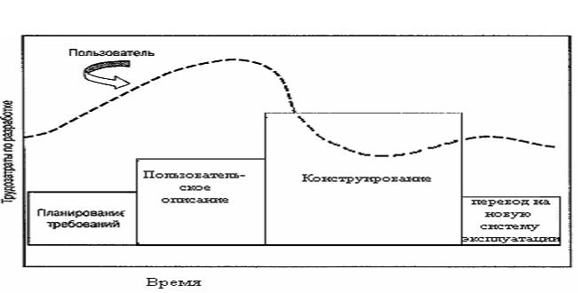

Модель быстрой разработки приложений RAD (Rapid Application Development)
Пользователь задействован на всех фазах ЖЦ. Короткое время перехода от определения требований до создания полной системы. Разработка продукта ограничивается 60 днями, называемыми временным блоком с использованием мощных инструментальных средств разработки. Характеризуется высоким уровнем фактора использования.

Рисунок 2.5 - Модель быстрой разработки приложений RAD
Преимущества модели быстрой разработки приложений RAD (Rapid Application Development)
- Время цикла разработки проекта сокращается.
- Требуется меньшее количество специалистов.
- Уменьшаются затраты.
- Создается обратная связь.
- Повторно используются компоненты уже существующих программ.
- Возможно произвести быстрый изначальный просмотр продукта.
Недостатки модели быстрой разработки приложений RAD (Rapid Application Development).
- Необходимо достаточное количество высококвалифицированных разработчиков.
- Неудачна при отсутствии компонент для повторного использования.
- Требуются быстрые действия из-за жестких временных ограничений.
- Необходим эффективный ускоренный процесс разработки.
- При использовании "вслепую" затраты не ограничены.
Область применения модели быстрой разработки приложений RAD (Rapid Application Development).
- В моделируемых и масштабируемых системах.
- Требования хорошо известны.
- При невысокой степени технических рисков.
- В информационных системах.
- При выполнении проектов в сокращенные сроки.
- Пригодные к повторному использованию части можно легко получить.
- В системах небольшого размера.Затраты и соблюдение графика не являются самым важным вопросом.